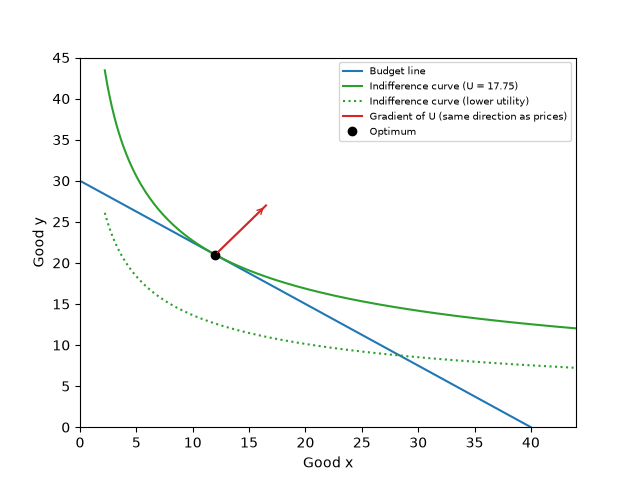
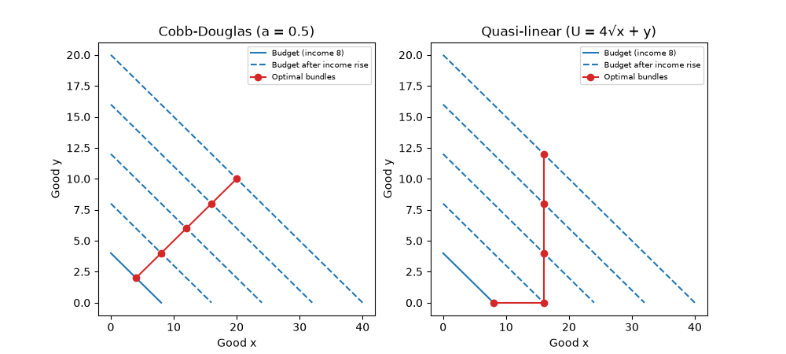
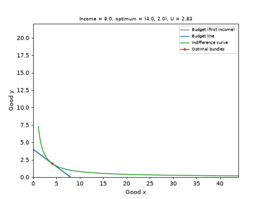

第 8 章: 多変数の微分と効用最大化¶
8.1 この章の地図¶
第 7 章では、「何が買えるか」を予算制約 p·x ≤ m で表しました。この章では、買えるものの中から「何を選ぶか」を考えます。
満足の度合い（効用）は、2 つの財の量 x・y で決まる、2 変数の関数 U(x, y) です。1 つの変数だけを動かして、ほかを固定した微分が偏微分です。偏微分を使うと、「予算線と無差別曲線が接する点が、効用が最大の点」という条件を、式とコードにできます。この章は、第 2 部（第 5〜8 章）の最後で、到達チェックも行います。

| 項目 | 内容 |
|---|---|
| 経済学の題材 | 効用最大化、限界効用、限界代替率、ラグランジュ乗数（所得の限界効用）、準線形効用と端点解、部分均衡分析、労働と余暇、消費と貯蓄、2 製品の企業の利潤最大化 |
| 数学 | 2 変数関数、偏微分（数値と公式）、制約なしの最適化（2 階の偏微分とヘッセ行列）、制約付きの最適化（ラグランジュの未定乗数法）、準凹関数とオイラーの定理（発展） |
| 使う Python の機能 | 関数を返す関数（lambda で変数を固定する）、itertools.combinations、pytest.mark.parametrize、テスト（pytest） |
| 新しく導入するライブラリ | なし（第 7 章の NumPy を、図で使う） |
| 完成形 | numerical_partial_x、numerical_partial_y、numerical_hessian_2d、classify_critical_point_2d、quadratic_2d_critical_point、euler_degree_of_homogeneity、is_quasi_concave_on_points、cobb_douglas_utility、cobb_douglas_indifference_y、cobb_douglas_marginal_utilities、cobb_douglas_mrs、numerical_mrs、cobb_douglas_demand、cobb_douglas_lagrange_multiplier、budget_line_bundles、best_bundle_on_budget_line、quasilinear_utility、quasilinear_demand |
| ファイル | 実装: lib/chapter08/partial.py（偏微分と最適化）、lib/chapter08/utility.py（効用最大化）、lib/chapter08/plot.py（図）／テスト: test/chapter08/test_partial.py、test/chapter08/test_utility.py、test/chapter08/test_plot.py |
| データ | なし（手計算できる小さな例だけ） |
数学の式とコードの対応¶
| 経済学・数学 | 式 | コード |
|---|---|---|
| 偏微分（数値） | ∂f/∂x ≈ (f(x + h, y) − f(x − h, y)) ÷ (2h) | numerical_partial_x(func, x, y) |
| ヘッセ行列の判定 | D = f_xx·f_yy − f_xy² と f_xx の符号 | classify_critical_point_2d(fxx, fxy, fyy) |
| コブ・ダグラス型の効用 | U = x^a·y^(1−a) | cobb_douglas_utility(x, y, a) |
| 限界効用 | U_x = ∂U/∂x、U_y = ∂U/∂y | cobb_douglas_marginal_utilities(x, y, a) |
| 限界代替率 | MRS = U_x ÷ U_y | cobb_douglas_mrs(x, y, a)、numerical_mrs(utility, x, y) |
| 効用最大化 | MRS = p_x ÷ p_y と p_x·x + p_y·y = m を連立する | cobb_douglas_demand(prices, m, a) |
| ラグランジュ乗数 | λ = U_x ÷ p_x = U_y ÷ p_y | cobb_douglas_lagrange_multiplier(prices, m, a) |
| 格子探索 | 予算線上の点で、U が最大の点 | best_bundle_on_budget_line(utility, prices, m, points) |
| 準線形効用 | U = b·√x + y | quasilinear_utility、quasilinear_demand |
記号について: 偏微分 ∂U/∂x を、U_x と短く書きます。2 階の偏微分 ∂²f/∂x∂y は f_xy です。2 つの財を x・y、価格を p_x・p_y、所得を m と書きます。コードでは、第 7 章と同じく、価格をリスト
[p_x, p_y]で渡します。
前提とする章¶
| できること | 場所 |
|---|---|
| 数値微分（中心差分）と、導関数の符号で最大・最小を判定する | 第 5 章 |
| 予算線・切片・価格ベクトル（法線ベクトル）を扱う | 第 7 章 |
| 格子探索で最大の点を探す | 第 2 章 |
効用最大化の経済学は、ミクロ経済学のためのプログラミング（初級）の第 1 章（効用と無差別曲線）と第 2 章（予算制約と最適な消費）で扱います。この章は、そこで使う数学（偏微分と制約付きの最適化）を、関数とテストで確かめます。
8.2 準備¶
cd apps/math-for-economics-programming/python
uv run pytest test/chapter08
59 passed
自分でコードを書くときは、practice/chapter08/ に、完成形と同じ名前のファイル（partial.py・utility.py・plot.py・test_partial.py・test_utility.py・test_plot.py）を作ります。図を後回しにするなら、plot.py と test_plot.py は要らず、テストは 50 件になります。
- テスト・
utility.py・plot.py・check スクリプトの import を、from practice.chapter08...に書き換えます（utility.pyはpartialを、plot.pyはutilityを import します。書き換えないと、完成形を動かします） - 第 5 章の
numerical_derivativeと、第 7 章のbudget_interceptsなどは、自分で写したpractice.chapter05・practice.chapter07から import します。写していなければ、lib.chapter05・lib.chapter07のままでかまいません。この章では、それらの実装を再掲しません - テストの import の一覧は、完成形の全関数です。まだ書いていない関数を import すると、
ImportErrorになります。関数を 1 つ書くたびに、名前を import に足してください
「予想の答え合わせ」のスクリプトは、practice/chapter08/check.py に保存し、uv run python -m practice.chapter08.check で実行します。
8.3 予想する¶
次の 5 つの問いに、紙で、手計算で答えてください。答えは、この節には書いてありません。「プログラミング」の節の「予想の答え合わせ」で確かめます。
- 効用 U = √(xy)、価格 (2, 5)、所得 100 です。効用を最大にする x・y と、そのときの効用（小数第 2 位まで）は、いくつですか。その点の限界代替率は、価格比 2 ÷ 5 と比べて、どうなっていますか。1 円あたりの限界効用 U_x ÷ p_x は、いくつですか
- 効用を U = x^0.3·y^0.7 に変え、価格 (2, 7)、所得 140 にします。最適な x・y は、いくつですか。所得の何割を x に使いますか
- 2 つの製品を作る企業の利潤が π = 50x + 40y − x² − xy − y² です。利潤を最大にする (x, y) と、最大の利潤は、いくつですか。その点は、本当に最大ですか（最小や鞍点ではありませんか）
- 効用 U = 4√x + y、価格 (1, 2) です。所得が 10 のときと 30 のときの、最適な (x, y) は、それぞれいくつですか
- （発展）U = √(xy) の点 (25, 10) で、x·U_x + y·U_y は、いくつですか。発展の節を飛ばす方は、この問いも、飛ばしてかまいません
8.4 偏微分と効用最大化の考え方¶
多変数関数と偏微分¶
2 つの量で決まる関数 f(x, y) を、2 変数関数と言います。グラフは、平面の上の曲面です。y を固定して、x だけを動かしたときの傾きが、x についての偏微分 f_x = ∂f/∂x です。
f(x, y) = x²y + 3y² なら、f_x = 2xy（y は定数とみなす）、f_y = x² + 6y
計算は、1 変数の微分と同じです。数値でも、第 5 章の中心差分を、1 つの変数にだけ当てれば求まります。
限界効用と限界代替率¶
効用 U(x, y) の偏微分 U_x を、x の限界効用と言います（x をもう少し増やしたときの、効用の増え方）。この章の中心の例は、コブ・ダグラス型の効用です。
U = x^a·y^(1−a)（0 < a < 1）、U_x = a·U ÷ x、U_y = (1 − a)·U ÷ y
効用が同じ水準の (x, y) を結んだ曲線が、無差別曲線です。無差別曲線の上で x を少し増やすと、効用を保つために y を減らす必要があります。その交換の比率（無差別曲線の傾きの大きさ）が、限界代替率です。
MRS = U_x ÷ U_y（コブ・ダグラス型なら (a ÷ (1 − a))·(y ÷ x)）
無差別曲線の上では、U_x·Δx + U_y·Δy = 0（効用が変わらない）なので、傾きは Δy ÷ Δx = −U_x ÷ U_y です。
制約なしの最適化¶
制約がなければ、最大の点では、どの方向の偏微分も 0 です（f_x = f_y = 0。1 変数の f'(x) = 0 と同じ）。この点を停留点と言います。停留点が最大か最小かは、2 階の偏微分を並べたヘッセ行列 [[f_xx, f_xy], [f_xy, f_yy]] で判定します。
| 行列式 D = f_xx·f_yy − f_xy² | f_xx | 停留点 |
|---|---|---|
| 正 | 負 | 極大 |
| 正 | 正 | 極小 |
| 負 | — | 鞍点（ある方向には最大、別の方向には最小） |
| 0（数値では、ほぼ 0） | — | この方法では判定できない |
f_xx と f_yy が両方負でも、f_xy が大きいと D < 0 で鞍点です。対角だけでは決まりません。
2 次関数 f = ax² + bxy + cy² + dx + ey なら、f_x = 2ax + by + d = 0 と f_y = bx + 2cy + e = 0 は、連立 1 次方程式です。行列式 4ac − b² が 0 でなければ、停留点は 1 つに決まります。
制約付きの最適化: 効用最大化¶
予算制約 p_x·x + p_y·y = m のもとで、効用を最大にします。予算線の上を動くとき、効用が増える方向が残っていれば、まだ最大ではありません。最大の点では、無差別曲線が予算線に接します。傾きが等しいので、
MRS = U_x ÷ U_y = p_x ÷ p_y（限界代替率 ＝ 価格比）
です。言い換えると、U_x ÷ p_x = U_y ÷ p_y（1 円あたりの限界効用が、どちらの財でも等しい）。等しくなければ、1 円を、限界効用の低い財から高い財へ移すと、効用が増えます。
この条件と予算制約を連立すると、コブ・ダグラス型では、解析解が求まります。(a ÷ (1 − a))·(y ÷ x) = p_x ÷ p_y から、p_y·y = ((1 − a) ÷ a)·p_x·x です。予算制約に入れると、p_x·x ÷ a = m なので、
x* = a·m ÷ p_x、y* = (1 − a)·m ÷ p_y
です。所得の割合 a を x に使うのが、コブ・ダグラス型の特徴です。
ラグランジュの未定乗数法は、同じ条件を、機械的に導く方法です。L = U(x, y) + λ(m − p_x·x − p_y·y) を、x・y・λ で偏微分して 0 とおくと、U_x = λ·p_x、U_y = λ·p_y、予算制約、の 3 つの式が出ます。乗数 λ は、1 円あたりの限界効用で、「所得が 1 増えたときに、最大の効用がどれだけ増えるか」（所得の限界効用）でもあります。
数式に頼らない確かめ方もあります。予算線の上に点を細かく並べ、効用が最大の点を探す（格子探索。第 2 章）。解析解と、格子探索の答えが一致すれば、どちらかの書き間違いを見つけられます。
準線形効用と端点解¶
準線形効用 U = b·√x + y は、y について 1 次の効用です。U_x = b ÷ (2√x)、U_y = 1 なので、MRS = 価格比 から、x* = (b·p_y ÷ (2p_x))² です。x の需要が、所得によりません（所得が増えた分は、すべて y に回る）。
所得が少なくて、x* を買えないときは、所得をすべて x に使い、y = 0 にします。最適点が予算線の端（軸の上）にあるので、端点解と言います。端点解では、MRS ＝ 価格比 が成り立ちません（MRS > 価格比。x をもっと欲しいが、y をこれ以上減らせない）。
部分均衡分析との関係¶
y を「ほかのすべての財に使うお金」とみなし、その価格を 1 にします。準線形効用なら、MRS = p_x から、価格 p_x ＝ x の限界効用 b ÷ (2√x) です。これは、x の需要曲線（逆需要曲線）です。第 1 章で、天下り的に与えた需要曲線は、こうして効用最大化から導けます。ほかの財への影響（所得効果）を無視して、1 つの市場だけを見るのが、部分均衡分析です。準線形効用は、その仮定を、効用の形で表したものです。
もう少し練習: 労働と余暇、消費と貯蓄¶
第 7 章で、労働と余暇・消費と貯蓄の予算線を、価格ベクトルと所得の形にしました。
| 題材 | 2 つの「財」 | 価格ベクトル | 所得 |
|---|---|---|---|
| 労働と余暇 | 消費 c、余暇 l | (1, w) | 完全所得 w·T + N |
| 消費と貯蓄 | 今期の消費 c₁、来期の消費 c₂ | (1, 1 ÷ (1 + r)) | 所得の割引現在価値 y₁ + y₂ ÷ (1 + r) |
形が同じなので、効用最大化の関数を、そのまま使えます。コブ・ダグラス型なら、完全所得の割合 1 − a を、余暇に使います。
発展: 準凹関数とオイラーの定理
準凹関数: 無差別曲線が原点に向かって凸（予算線に接する点が 1 つ）になるのは、効用が準凹のときです。準凹とは、どの 2 点 A・B を結ぶ線分の上でも、f の値が、f(A) と f(B) の小さいほう以上であることです。凹関数（第 5 章）なら準凹ですが、逆は成り立ちません。U = xy は、ヘッセ行列が [[0, 1], [1, 0]]（D = −1）で凹ではありませんが、準凹です。U = x² + y² は、(2, 0) と (0, 2) の中点 (1, 1) で 2 になり、両端の 4 より小さいので、準凹ではありません。準凹でない効用では、MRS ＝ 価格比 の点が、効用の最小になることがあります。
オイラーの定理: すべての量を t 倍すると、値が t^k 倍になる関数を、k 次同次と言います。k 次同次の関数では、
x·f_x + y·f_y = k·f
です。コブ・ダグラス型の効用 x^a·y^(1−a) は 1 次同次なので、x·U_x + y·U_y = U です。生産関数 F(K, L) が 1 次同次なら、資本と労働に、それぞれの限界生産物（K·F_K と L·F_L）を払うと、生産物がちょうど分け尽くされます（完全分配定理）。
8.5 プログラミング¶
Red: 偏微分のテスト¶
test_partial.py の先頭の import です（完成形の全関数）。
import pytest
from lib.chapter08.partial import (
classify_critical_point_2d,
euler_degree_of_homogeneity,
is_quasi_concave_on_points,
numerical_hessian_2d,
numerical_partial_x,
numerical_partial_y,
quadratic_2d_critical_point,
)
最初のテストは、手計算できる f = x²y + 3y² の偏微分です（(2, 5) で f_x = 20、f_y = 34）。2 つ目は、負・0・0 < x < 1 の点で、公式 2xy・x² + 6y と一致することを確かめます。
def _surface(x: float, y: float) -> float:
"""f(x, y) = x²y + 3y²。f_x = 2xy、f_y = x² + 6y。"""
return x**2 * y + 3 * y**2
def test_偏微分はほかの変数を固定して微分する() -> None:
assert numerical_partial_x(_surface, 2, 5) == pytest.approx(20)
assert numerical_partial_y(_surface, 2, 5) == pytest.approx(34)
def test_偏微分の数値は公式と負や0や1未満の点でも一致する() -> None:
for x, y in [(-1.5, 2), (0, 0.4), (0.3, -2), (4, 0)]:
assert numerical_partial_x(_surface, x, y) == pytest.approx(2 * x * y, abs=1e-6)
assert numerical_partial_y(_surface, x, y) == pytest.approx(
x**2 + 6 * y, abs=1e-6
)
lib.chapter08.partial がないので、収集の時点で失敗します（Red）。
Green: 偏微分を、第 5 章の数値微分で¶
partial.py の先頭の import です。第 5 章の numerical_derivative を使います（実装は、第 5 章を見てください）。
from collections.abc import Callable, Sequence
from itertools import combinations
from lib.chapter05.derivative import numerical_derivative
Surface = Callable[[float, float], float]
def numerical_partial_x(func: Surface, x: float, y: float, step: float = 1e-5) -> float:
"""y を固定して、x で微分する: ∂f/∂x。"""
return numerical_derivative(lambda t: func(t, y), x, step)
def numerical_partial_y(func: Surface, x: float, y: float, step: float = 1e-5) -> float:
"""x を固定して、y で微分する: ∂f/∂y。"""
return numerical_derivative(lambda t: func(x, t), y, step)
lambda t: func(t, y) は、「y を固定して、x だけを動かす 1 変数の関数」です。それを第 5 章の中心差分に渡せば、偏微分になります。Surface は、「2 つの数を受け取って、数を返す関数」の型の別名です。
制約なしの最適化¶
2 製品の企業の利潤 π = 50x + 40y − x² − xy − y² を、停留点（連立方程式）・偏微分 = 0・ヘッセ行列の 3 つで調べます。
def _two_product_profit(x: float, y: float) -> float:
"""2 つの製品を作る企業の利潤 π = 50x + 40y − x² − xy − y²。"""
return 50 * x + 40 * y - x**2 - x * y - y**2
def test_2製品の利潤は偏微分が両方0になる点で最大() -> None:
x, y = quadratic_2d_critical_point(-1, -1, -1, 50, 40)
assert (x, y) == pytest.approx((20, 10))
assert _two_product_profit(x, y) == pytest.approx(700)
assert numerical_partial_x(_two_product_profit, x, y) == pytest.approx(0, abs=1e-6)
assert numerical_partial_y(_two_product_profit, x, y) == pytest.approx(0, abs=1e-6)
def test_ヘッセ行列の数値は2階の偏微分の公式と一致する() -> None:
assert numerical_hessian_2d(_two_product_profit, 20, 10) == pytest.approx(
(-2, -1, -2), abs=1e-6
)
# f = x²y + 3y² の 2 階の偏微分: f_xx = 2y、f_xy = 2x、f_yy = 6
assert numerical_hessian_2d(_surface, 1.5, -0.4) == pytest.approx(
(-0.8, 3, 6), abs=1e-6
)
def test_ヘッセ行列の行列式と左上の符号で極大と極小を分ける() -> None:
assert classify_critical_point_2d(-2, -1, -2) == "maximum"
assert classify_critical_point_2d(2, 1, 3) == "minimum"
assert classify_critical_point_2d(2, 0, -2) == "saddle"
def test_対角が両方負でも行列式が負なら鞍点() -> None:
assert classify_critical_point_2d(-1, 2, -1) == "saddle"
def numerical_hessian_2d(
func: Surface, x: float, y: float, step: float = 1e-3
) -> tuple[float, float, float]:
"""2 階の偏微分 (f_xx, f_xy, f_yy) を、差分で近似する（ヘッセ行列の成分）。"""
h = step
center = func(x, y)
fxx = (func(x + h, y) - 2 * center + func(x - h, y)) / h**2
fyy = (func(x, y + h) - 2 * center + func(x, y - h)) / h**2
fxy = (
func(x + h, y + h)
- func(x + h, y - h)
- func(x - h, y + h)
+ func(x - h, y - h)
) / (4 * h**2)
return fxx, fxy, fyy
def classify_critical_point_2d(
fxx: float, fxy: float, fyy: float, tolerance: float = 1e-9
) -> str:
"""ヘッセ行列の行列式 D = f_xx·f_yy − f_xy² と f_xx の符号で、停留点を分ける。
数値のヘッセ行列では D がちょうど 0 にならないので、成分の大きさに比べて
|D| が tolerance 倍以下なら、0 とみなす（判定できない）。
"""
determinant = fxx * fyy - fxy**2
if abs(determinant) <= tolerance * (fxx**2 + fxy**2 + fyy**2):
return "undetermined"
if determinant < 0:
return "saddle"
return "maximum" if fxx < 0 else "minimum"
def quadratic_2d_critical_point(
a: float, b: float, c: float, d: float, e: float
) -> tuple[float, float]:
"""f = ax² + bxy + cy² + dx + ey の停留点。f_x = f_y = 0 の連立方程式を解く。"""
determinant = 4 * a * c - b**2
if determinant == 0:
raise ValueError("連立方程式の行列式が 0 で、停留点が 1 つに決まりません")
x = (b * e - 2 * c * d) / determinant
y = (b * d - 2 * a * e) / determinant
return x, y
- 2 階の偏微分は、f_xx ≈ (f(x + h) − 2f(x) + f(x − h)) ÷ h² です。f_xy は、4 隅の値の組み合わせで近似します。刻み幅 h を 10⁻⁵ にすると、h² = 10⁻¹⁰ で割るので、丸めの誤差が大きくなります。既定は 10⁻³ にしました（2 次関数なら、打ち切りの誤差は 0）
- 数値のヘッセ行列では、行列式がちょうど 0 にならず、10⁻¹⁵ ほどの丸め誤差が残ります（−(x + y)² の (1, −1) など）。そこで、成分の 2 乗和の
tolerance倍（既定 10⁻⁹）以下の |D| を、0 とみなします（境界のテストを参照） - 停留点は、2 つの 1 次方程式を、クラメルの公式で解きます。係数が対称でない例（f = 2x² + xy + 3y² − 9x − 13y）もテストにして、x と y の式の取り違えを防ぎます（境界のテストを参照）
Red: 効用関数のテスト¶
test_utility.py の先頭です。_cobb_douglas は、指数 a を決めて、効用を 2 変数の関数にします（偏微分や格子探索に渡すため）。
import pytest
from lib.chapter05.derivative import numerical_derivative
from lib.chapter07.budget import (
budget_status,
consumption_given_leisure,
full_income,
lifetime_income_present_value,
second_period_consumption,
)
from lib.chapter08.partial import Surface, numerical_partial_x, numerical_partial_y
from lib.chapter08.utility import (
best_bundle_on_budget_line,
budget_line_bundles,
cobb_douglas_demand,
cobb_douglas_indifference_y,
cobb_douglas_lagrange_multiplier,
cobb_douglas_marginal_utilities,
cobb_douglas_mrs,
cobb_douglas_utility,
numerical_mrs,
quasilinear_demand,
quasilinear_utility,
)
def _cobb_douglas(share: float) -> Surface:
"""効用 U = x^a·y^(1−a) を、2 変数の関数にする（偏微分に渡すため）。"""
return lambda x, y: cobb_douglas_utility(x, y, share)
def test_コブダグラス型の効用はxのa乗とyの1マイナスa乗の積() -> None:
assert cobb_douglas_utility(25, 10, 0.5) == pytest.approx(250**0.5)
assert cobb_douglas_utility(8, 27, 1 / 3) == pytest.approx(18)
def test_限界効用の公式は偏微分の数値と一致する() -> None:
for x, y, share in [(25, 10, 0.5), (21, 14, 0.3), (0.4, 3, 0.8), (3, 0.6, 0.3)]:
mu_x, mu_y = cobb_douglas_marginal_utilities(x, y, share)
utility = _cobb_douglas(share)
assert mu_x == pytest.approx(numerical_partial_x(utility, x, y))
assert mu_y == pytest.approx(numerical_partial_y(utility, x, y))
def test_限界代替率は限界効用の比() -> None:
assert cobb_douglas_mrs(25, 10, 0.5) == pytest.approx(0.4)
assert cobb_douglas_mrs(21, 14, 0.3) == pytest.approx(0.3 / 0.7 * 14 / 21)
assert numerical_mrs(_cobb_douglas(0.5), 25, 10) == pytest.approx(0.4)
Green: 限界効用と限界代替率¶
utility.py の先頭の import です。第 7 章の budget_intercepts（予算線の切片 m ÷ pᵢ）を使います。
from collections.abc import Sequence
from lib.chapter07.budget import budget_intercepts
from lib.chapter08.partial import Surface, numerical_partial_x, numerical_partial_y
def _check_share(share: float) -> None:
if not 0 < share < 1:
raise ValueError("指数 a は、0 より大きく 1 より小さくなければなりません")
def cobb_douglas_utility(x: float, y: float, share: float) -> float:
"""コブ・ダグラス型の効用 U = x^a·y^(1−a)。"""
_check_share(share)
if x < 0 or y < 0:
raise ValueError("数量は 0 以上でなければなりません")
return float(x**share * y ** (1 - share))
def cobb_douglas_marginal_utilities(
x: float, y: float, share: float
) -> tuple[float, float]:
"""限界効用 (U_x, U_y) = (a·U ÷ x, (1 − a)·U ÷ y)（偏微分の公式）。"""
if x <= 0 or y <= 0:
raise ValueError("数量が 0 の点では、限界効用が決まりません")
utility = cobb_douglas_utility(x, y, share)
return share * utility / x, (1 - share) * utility / y
def cobb_douglas_mrs(x: float, y: float, share: float) -> float:
"""限界代替率 MRS = U_x ÷ U_y = (a ÷ (1 − a))·(y ÷ x)。"""
mu_x, mu_y = cobb_douglas_marginal_utilities(x, y, share)
return mu_x / mu_y
def numerical_mrs(utility: Surface, x: float, y: float) -> float:
"""どんな効用関数でも、偏微分の数値の比で、限界代替率を求める。"""
return numerical_partial_x(utility, x, y) / numerical_partial_y(utility, x, y)
限界効用の公式と、偏微分の数値の一致を、a = 0.5 だけでなく 0.3・0.8 でも確かめます。a = 0.5 だけでは、U_x と U_y の式で、a と 1 − a を取り違えても気づきません。numerical_mrs は、効用の式を問いません（準線形効用でも使います）。
無差別曲線¶
無差別曲線は、U = x^a·y^(1−a) を y について解いた y = (U ÷ x^a)^(1 ÷ (1 − a)) です。図で使いますが、図を後回しにする方も、ここで書きます。
def test_無差別曲線上の点は効用が同じ水準() -> None:
for x in [1, 6.25, 25, 0.4]:
y = cobb_douglas_indifference_y(250**0.5, x, 0.5)
assert cobb_douglas_utility(x, y, 0.5) == pytest.approx(250**0.5)
assert cobb_douglas_indifference_y(18, 8, 1 / 3) == pytest.approx(27)
def test_無差別曲線はxが正のときだけ描ける() -> None:
with pytest.raises(ValueError):
cobb_douglas_indifference_y(10, 0, 0.5)
def cobb_douglas_indifference_y(level: float, x: float, share: float) -> float:
"""無差別曲線 x^a·y^(1−a) = U の上で、x のときの y = (U ÷ x^a)^(1 ÷ (1 − a))。"""
_check_share(share)
if x <= 0 or level < 0:
raise ValueError("x が 0 以下か、効用水準が負では、無差別曲線が決まりません")
return float((level / x**share) ** (1 / (1 - share)))
効用最大化: 解析解とラグランジュ乗数¶
def test_価格2と5で所得100ならxは25でyは10() -> None:
assert cobb_douglas_demand([2, 5], 100, 0.5) == pytest.approx((25, 10))
assert cobb_douglas_utility(25, 10, 0.5) == pytest.approx(15.81, abs=0.01)
def test_最適点では限界代替率が価格比に等しく予算線上にある() -> None:
for prices, income, share in [([2, 5], 100, 0.5), ([2, 7], 140, 0.3)]:
x, y = cobb_douglas_demand(prices, income, share)
assert cobb_douglas_mrs(x, y, share) == pytest.approx(prices[0] / prices[1])
assert budget_status(prices, [x, y], income) == "on"
def test_ラグランジュ乗数は1円あたりの限界効用でどちらの財でも等しい() -> None:
multiplier = cobb_douglas_lagrange_multiplier([2, 5], 100, 0.5)
assert multiplier == pytest.approx(0.158, abs=1e-3)
mu_x, mu_y = cobb_douglas_marginal_utilities(25, 10, 0.5)
assert mu_x / 2 == pytest.approx(multiplier)
assert mu_y / 5 == pytest.approx(multiplier)
@pytest.mark.parametrize(
("prices", "income", "share"), [([2, 5], 100, 0.5), ([2, 7], 140, 0.3)]
)
def test_ラグランジュ乗数は所得が1増えたときの効用の増え方(
prices: list[float], income: float, share: float
) -> None:
slope = numerical_derivative(
lambda m: cobb_douglas_utility(*cobb_douglas_demand(prices, m, share), share),
income,
)
assert slope == pytest.approx(
cobb_douglas_lagrange_multiplier(prices, income, share)
)
def _two_good_intercepts(prices: Sequence[float], income: float) -> list[float]:
"""2 財の予算線の切片 [m ÷ p_x, m ÷ p_y]（第 7 章）。所得は 0 以上。"""
if len(prices) != 2 or income < 0:
raise ValueError("2 財の価格と、0 以上の所得が必要です")
return budget_intercepts(prices, income)
def cobb_douglas_demand(
prices: Sequence[float], income: float, share: float
) -> tuple[float, float]:
"""効用最大化の解析解 x* = a·m ÷ p_x、y* = (1 − a)·m ÷ p_y。"""
_check_share(share)
x_max, y_max = _two_good_intercepts(prices, income)
return share * x_max, (1 - share) * y_max
def cobb_douglas_lagrange_multiplier(
prices: Sequence[float], income: float, share: float
) -> float:
"""最適点でのラグランジュ乗数 λ = U_x ÷ p_x（1 円あたりの限界効用）。"""
x, y = cobb_douglas_demand(prices, income, share)
mu_x, _ = cobb_douglas_marginal_utilities(x, y, share)
return mu_x / prices[0]
- 最適点が予算線上にあることを、第 7 章の
budget_statusで確かめます - 最後のテストは、λ が「所得が 1 増えたときの、最大の効用の増え方」であることを、最大の効用を所得の関数とみて、第 5 章の数値微分で確かめます。
pytest.mark.parametrizeは、同じテストを、引数の組ごとに実行します（2 件と数えます）
格子探索との一致¶
def test_予算線上の格子は2つの切片を結び全部が予算線上() -> None:
bundles = budget_line_bundles([2, 5], 100, 5)
assert bundles == [(0, 20), (12.5, 15), (25, 10), (37.5, 5), (50, 0)]
assert all(budget_status([2, 5], list(b), 100) == "on" for b in bundles)
def test_格子探索の最大は解析解と一致する() -> None:
for prices, income, share in [([2, 5], 100, 0.5), ([2, 7], 140, 0.3)]:
best = best_bundle_on_budget_line(_cobb_douglas(share), prices, income, 2001)
expected = cobb_douglas_demand(prices, income, share)
assert best == pytest.approx(expected, abs=0.05)
def budget_line_bundles(
prices: Sequence[float], income: float, points: int
) -> list[tuple[float, float]]:
"""予算線を points 個の点に等分する。財 2 の切片から、財 1 の切片まで。"""
if points < 2:
raise ValueError("格子の点は、2 つ以上必要です")
x_max, y_max = _two_good_intercepts(prices, income)
shares = [i / (points - 1) for i in range(points)]
return [(t * x_max, (1 - t) * y_max) for t in shares]
def best_bundle_on_budget_line(
utility: Surface, prices: Sequence[float], income: float, points: int
) -> tuple[float, float]:
"""格子探索: 予算線上の点を並べて、効用が最大の点を返す。"""
bundles = budget_line_bundles(prices, income, points)
return max(bundles, key=lambda bundle: utility(*bundle))
格子は、予算線を t : (1 − t) に内分する点 (t·m ÷ p_x, (1 − t)·m ÷ p_y) です。どの点も、支出は t·m + (1 − t)·m = m で、予算線上にあります。2001 点の格子の間隔は 0.025 なので、許容誤差を 0.05 にしています。
準線形効用と端点解¶
def _quasilinear(weight: float) -> Surface:
"""効用 U = b·√x + y を、2 変数の関数にする。"""
return lambda x, y: quasilinear_utility(x, y, weight)
def test_準線形効用の最適点は限界代替率が価格比に等しい() -> None:
assert quasilinear_demand([2, 1], 20, 4) == pytest.approx((1, 18))
x, y = quasilinear_demand([1, 2], 10, 1)
assert (x, y) == pytest.approx((1, 4.5))
assert numerical_mrs(_quasilinear(1), x, y) == pytest.approx(1 / 2)
def test_準線形効用ではxの需要が所得によらない() -> None:
for income in [20, 50, 1000]:
x, _ = quasilinear_demand([2, 1], income, 4)
assert x == pytest.approx(1)
def test_準線形効用では価格と限界効用が等しい点が需要曲線になる() -> None:
# y の価格を 1（お金）にすると、x の価格 p ＝ x の限界効用。逆需要曲線 p = 2 ÷ √x
for price in [0.5, 1, 2.5]:
x, _ = quasilinear_demand([price, 1], 1000, 4)
assert numerical_partial_x(_quasilinear(4), x, 1) == pytest.approx(price)
assert price == pytest.approx(2 / x**0.5)
def test_所得が少ないと準線形効用の最適点はyが0の端点解() -> None:
assert quasilinear_demand([1, 2], 10, 4) == pytest.approx((10, 0))
best = best_bundle_on_budget_line(_quasilinear(4), [1, 2], 10, 2001)
assert best == pytest.approx((10, 0))
# 端点では、U_x ÷ U_y（U_y = 1）が価格比 1/2 より大きい。x をもっと買いたいが、所得が尽きた
assert numerical_partial_x(_quasilinear(4), 10, 0) > 1 / 2
def quasilinear_utility(x: float, y: float, weight: float) -> float:
"""準線形効用 U = b·√x + y（y について線形）。"""
if x < 0 or y < 0:
raise ValueError("数量は 0 以上でなければなりません")
return float(weight * x**0.5 + y)
def quasilinear_demand(
prices: Sequence[float], income: float, weight: float
) -> tuple[float, float]:
"""MRS = b ÷ (2√x) = p_x ÷ p_y の x。所得で買えなければ、y = 0 の端点解。"""
if weight <= 0:
raise ValueError("重み b は、正でなければなりません")
x_max, y_max = _two_good_intercepts(prices, income)
x = (weight * prices[1] / (2 * prices[0])) ** 2
if x >= x_max:
return x_max, 0.0
return x, y_max - prices[0] * x / prices[1]
端点解も、格子探索で確かめます。格子の端の点は、ちょうど (m ÷ p_x, 0) です。3 つ目のテストは、部分均衡分析の考え方（価格 ＝ 限界効用 が需要曲線）を、y の価格を 1 にして確かめます。
労働と余暇、消費と貯蓄¶
新しい関数は要りません。第 7 章の full_income・lifetime_income_present_value で所得を作り、価格ベクトルを (1, w)・(1, 1 ÷ (1 + r)) にして、cobb_douglas_demand に渡します。
def test_労働と余暇は価格1と賃金の予算での効用最大化() -> None:
consumption, leisure = cobb_douglas_demand([1, 10], full_income(10, 24), 0.5)
assert (consumption, leisure) == pytest.approx((120, 12))
consumption, leisure = cobb_douglas_demand([1, 8], full_income(8, 24, 40), 0.6)
assert (consumption, leisure) == pytest.approx((139.2, 11.6))
assert consumption == pytest.approx(consumption_given_leisure(leisure, 8, 24, 40))
def test_消費と貯蓄は来期の価格1割る1プラスrの予算での効用最大化() -> None:
wealth = lifetime_income_present_value(100, 110, 0.1)
first, second = cobb_douglas_demand([1, 1 / 1.1], wealth, 0.6)
assert (first, second) == pytest.approx((120, 88))
assert second == pytest.approx(second_period_consumption(first, 100, 110, 0.1))
時給 8・非労働所得 40・a = 0.6 なら、完全所得 8 × 24 + 40 = 232 の 4 割を余暇に使い、余暇 11.6 時間・消費 139.2 です。消費と貯蓄の例では、今期の消費 120 が所得 100 を上回り、20 を借りています。
発展: 準凹関数とオイラーの定理¶
準凹とオイラーの定理のテストと実装（発展。後回しにしても、学習は成り立ちます）
test_partial.py に足すテストです。
def _cobb_douglas_03(x: float, y: float) -> float:
"""U = x^0.3·y^0.7（1 次同次）。"""
return float(x**0.3 * y**0.7)
def _product(x: float, y: float) -> float:
"""U = xy（2 次同次）。"""
return x * y
def _sum_of_squares(x: float, y: float) -> float:
return x**2 + y**2
def _quasilinear_root(x: float, y: float) -> float:
"""U = √x + y（同次でない）。"""
return float(x**0.5 + y)
def test_オイラーの定理で1次同次なら偏微分と量の積の和が元の値() -> None:
for x, y in [(25, 10), (0.5, 3), (7, 7)]:
assert euler_degree_of_homogeneity(_cobb_douglas_03, x, y) == pytest.approx(1)
def test_xyは2次同次で同次でない関数は点によって値が変わる() -> None:
assert euler_degree_of_homogeneity(_product, 3, 5) == pytest.approx(2)
assert euler_degree_of_homogeneity(_quasilinear_root, 1, 1) == pytest.approx(0.75)
assert euler_degree_of_homogeneity(_quasilinear_root, 4, 4) == pytest.approx(5 / 6)
def test_関数の値が0の点では同次の次数を求めない() -> None:
with pytest.raises(ValueError):
euler_degree_of_homogeneity(_product, 0, 5)
_SAMPLE_POINTS = [(1, 9), (4, 4), (9, 1), (2, 6), (0.5, 0.5), (6, 3)]
def test_コブダグラス型とxyは準凹で2乗の和は準凹でない() -> None:
assert is_quasi_concave_on_points(_cobb_douglas_03, _SAMPLE_POINTS)
assert is_quasi_concave_on_points(_product, _SAMPLE_POINTS)
assert not is_quasi_concave_on_points(_sum_of_squares, _SAMPLE_POINTS)
def test_準凹の判定は2点の間の点が両端の小さいほう以上かを見る() -> None:
# (2, 0) と (0, 2) の中点 (1, 1) では、x² + y² = 2 が、両端の 4 より小さい
assert not is_quasi_concave_on_points(_sum_of_squares, [(2, 0), (0, 2)])
assert is_quasi_concave_on_points(_sum_of_squares, [(2, 0), (3, 0)])
def _negative_sum(x: float, y: float) -> float:
"""f = −x − y（1 次関数。凹なので準凹）。"""
return -x - y
def test_1次関数は線分の上で両端の間の値をとるので準凹() -> None:
assert is_quasi_concave_on_points(_negative_sum, [(1, 0), (0, 1), (2, 0)])
def test_分割が2つだと両端しか調べないので準凹でない関数を見逃す() -> None:
assert is_quasi_concave_on_points(_sum_of_squares, [(2, 0), (0, 2)], steps=2)
assert not is_quasi_concave_on_points(_sum_of_squares, [(2, 0), (0, 2)], steps=3)
def test_準凹の判定には2点以上と2つ以上の分割が必要() -> None:
with pytest.raises(ValueError):
is_quasi_concave_on_points(_product, [(1, 1)])
with pytest.raises(ValueError):
is_quasi_concave_on_points(_product, _SAMPLE_POINTS, steps=1)
partial.py に足す実装です（combinations の import は、先頭で済ませています）。
def euler_degree_of_homogeneity(func: Surface, x: float, y: float) -> float:
"""(x·f_x + y·f_y) ÷ f。k 次同次の関数なら、どの点でも k（オイラーの定理）。"""
value = func(x, y)
if value == 0:
raise ValueError("関数の値が 0 の点では、比が決まりません")
weighted = x * numerical_partial_x(func, x, y) + y * numerical_partial_y(func, x, y)
return weighted / value
def is_quasi_concave_on_points(
func: Surface, points: Sequence[tuple[float, float]], steps: int = 11
) -> bool:
"""どの 2 点を結ぶ線分上でも、f が両端の小さいほう以上か（準凹）を調べる。"""
if len(points) < 2 or steps < 2:
raise ValueError("点は 2 つ以上、分割は 2 つ以上必要です")
weights = [i / (steps - 1) for i in range(steps)]
for (x1, y1), (x2, y2) in combinations(points, 2):
lowest = min(func(x1, y1), func(x2, y2))
for t in weights:
mixed = func(t * x1 + (1 - t) * x2, t * y1 + (1 - t) * y2)
if mixed < lowest - 1e-12 * (1 + abs(lowest)):
return False
return True
euler_degree_of_homogeneity は、(x·f_x + y·f_y) ÷ f を返します。k 次同次なら、どの点でも k です。同次でない √x + y では、点によって値が変わります。is_quasi_concave_on_points は、与えた点のすべての組（combinations）の線分を 11 等分して調べます。有限個の点で調べるので、False なら「準凹でない」と言えますが、True は「調べた範囲では、反例がない」だけです。分割を 2 にすると両端しか調べないので、x² + y² の反例を見逃します（テストで確かめています）。
予想の答え合わせ¶
from functools import partial
from lib.chapter08.partial import (
classify_critical_point_2d,
euler_degree_of_homogeneity,
numerical_partial_x,
numerical_partial_y,
quadratic_2d_critical_point,
)
from lib.chapter08.utility import (
cobb_douglas_demand,
cobb_douglas_lagrange_multiplier,
cobb_douglas_mrs,
cobb_douglas_utility,
quasilinear_demand,
)
x, y = cobb_douglas_demand([2, 5], 100, 0.5)
print(x, y, round(cobb_douglas_utility(x, y, 0.5), 6))
print(round(cobb_douglas_mrs(x, y, 0.5), 6))
print(round(cobb_douglas_lagrange_multiplier([2, 5], 100, 0.5), 6))
print(cobb_douglas_demand([2, 7], 140, 0.3))
x, y = quadratic_2d_critical_point(-1, -1, -1, 50, 40)
print(x, y, 50 * x + 40 * y - x**2 - x * y - y**2)
print(classify_critical_point_2d(-2, -1, -2))
print(quasilinear_demand([1, 2], 10, 4), quasilinear_demand([1, 2], 30, 4))
utility = partial(cobb_douglas_utility, share=0.5)
ux = numerical_partial_x(utility, 25, 10)
uy = numerical_partial_y(utility, 25, 10)
print(round(25 * ux + 10 * uy, 6))
print(round(euler_degree_of_homogeneity(utility, 25, 10), 6))
25.0 10.0 15.811388
0.4
0.158114
(21.0, 14.0)
20.0 10.0 700.0
maximum
(10.0, 0.0) (16.0, 7.0)
15.811388
1.0
- 1 つ目の問い: x = 0.5 × 100 ÷ 2 = 25、y = 0.5 × 100 ÷ 5 = 10、U = √250 ≈ 15.81 です。MRS = (10 ÷ 25) = 0.4 で、価格比 2 ÷ 5 に等しいです。1 円あたりの限界効用は、U_x ÷ 2 = (0.5 × 15.81 ÷ 25) ÷ 2 ≈ 0.158 です（U_y ÷ 5 も同じ）
- 2 つ目の問い: 所得の 3 割（42）を x に使い、x = 42 ÷ 2 = 21、y = 98 ÷ 7 = 14 です
- 3 つ目の問い: 50 − 2x − y = 0、40 − x − 2y = 0 から (20, 10)、利潤は 1000 + 400 − 400 − 200 − 100 = 700 です。ヘッセ行列は [[−2, −1], [−1, −2]] で、D = 4 − 1 = 3 > 0、f_xx < 0 なので、極大です
- 4 つ目の問い: MRS = 4 ÷ (2√x) = 1 ÷ 2 から x* = 16 ですが、所得 10 では買えないので、端点解 (10, 0) です。所得 30 なら (16, 7) です（増えた所得は、すべて y に回る）
- 5 つ目の問い（発展）: 1 次同次なので、x·U_x + y·U_y = U = √250 ≈ 15.81 です（最後から 2 行目の出力）。最後の行は、
euler_degree_of_homogeneityが返す U との比 1 です。functools.partialは、share=0.5を固定した 2 変数の関数を作ります（lambdaを変数に入れる書き方の代わり）
境界のテスト¶
完成形には、本文に載せなかったテストがあります。係数が対称でない 2 次関数、2 階の偏微分が 0 < |f_xx| < 1、行列式が 0 か、数値でほぼ 0（係数が負の場合・0 とみなす幅が係数の大きさに比例すること。判定できない・停留点が決まらない）、a = 0.3 の需要、数量 0、a が 0〜1 の外、負の数量、所得 0・負の所得・2 財でない予算・正でない価格、所得がちょうど足りる端点、2 点だけの格子、負の効用水準、正でない重みです。テストの件数を合わせるため、ここに全件載せます。
境界のテスト
test_partial.py に足すテストです。
def test_停留点は係数が対称でない2次関数でも連立方程式の解() -> None:
# f = 2x² + xy + 3y² − 9x − 13y。f_x = 4x + y − 9、f_y = x + 6y − 13
assert quadratic_2d_critical_point(2, 1, 3, -9, -13) == pytest.approx(
(41 / 23, 43 / 23)
)
def test_2階の偏微分が1未満の小さい値でも符号で判定する() -> None:
assert classify_critical_point_2d(0.5, 0.1, 0.5) == "minimum"
assert classify_critical_point_2d(-0.5, -0.1, -0.5) == "maximum"
def test_ヘッセ行列の行列式が0なら判定できない() -> None:
assert classify_critical_point_2d(1, 1, 1) == "undetermined"
assert classify_critical_point_2d(2, -2, 2) == "undetermined"
def _negative_square_of_sum(x: float, y: float) -> float:
"""f = −(x + y)²。ヘッセ行列は (−2, −2, −2) で、行列式は 0。"""
return -((x + y) ** 2)
def test_数値のヘッセ行列で行列式がほぼ0なら判定できない() -> None:
# 差分の丸め誤差で、行列式は ちょうど 0 にならない（1e-15 ほど）
hessian = numerical_hessian_2d(_negative_square_of_sum, 1, -1)
assert classify_critical_point_2d(*hessian) == "undetermined"
assert classify_critical_point_2d(-2, -2 + 1e-12, -2) == "undetermined"
def test_係数が負でも行列式がちょうど0なら判定できない() -> None:
for hessian in [(-4, 0, 0), (0, 0, -4), (-1, -1, -1), (-2, 2, -2)]:
assert classify_critical_point_2d(*hessian) == "undetermined"
def test_行列式を0とみなす幅は係数の大きさに比例する() -> None:
# D = 1 でも、係数が 10⁶ と大きければ、0 とみなす
assert classify_critical_point_2d(1e6, 0, 1e-6) == "undetermined"
assert classify_critical_point_2d(1, 0, 1e-6) == "minimum"
# 幅は 10⁻⁹ × (1 + 1 + 1) = 3 × 10⁻⁹。f_xy が負でも、2 乗で足す
assert classify_critical_point_2d(1, -1, 1 + 2.5e-9) == "undetermined"
assert classify_critical_point_2d(1, -1, 1 + 4e-9) == "minimum"
def test_行列式が0の2次関数には停留点が1つに決まらない() -> None:
with pytest.raises(ValueError):
quadratic_2d_critical_point(1, 2, 1, -4, -4)
test_utility.py に足すテストです。
def test_aが0点3なら所得の3割をxに使う() -> None:
x, y = cobb_douglas_demand([2, 7], 140, 0.3)
assert (x, y) == pytest.approx((21, 14))
assert 2 * x == pytest.approx(0.3 * 140)
def test_準線形効用は重み付きの平方根とyの和() -> None:
assert quasilinear_utility(9, 2.5, 4) == pytest.approx(14.5)
def test_数量が0なら効用は0で限界効用は決まらない() -> None:
assert cobb_douglas_utility(0, 7, 0.4) == 0
with pytest.raises(ValueError):
cobb_douglas_marginal_utilities(0, 7, 0.4)
with pytest.raises(ValueError):
cobb_douglas_marginal_utilities(3, 0, 0.4)
def test_指数aは0より大きく1より小さい() -> None:
for share in [0, 1, -0.2, 1.5]:
with pytest.raises(ValueError):
cobb_douglas_utility(2, 3, share)
with pytest.raises(ValueError):
cobb_douglas_demand([2, 5], 100, share)
def test_負の数量の効用は決まらない() -> None:
with pytest.raises(ValueError):
cobb_douglas_utility(-1, 3, 0.5)
with pytest.raises(ValueError):
cobb_douglas_utility(1, -3, 0.5)
with pytest.raises(ValueError):
quasilinear_utility(-1, 3, 2)
with pytest.raises(ValueError):
quasilinear_utility(1, -3, 2)
def test_所得0なら何も買わない() -> None:
assert cobb_douglas_demand([2, 5], 0, 0.5) == (0, 0)
assert quasilinear_demand([2, 1], 0, 4) == (0, 0)
def test_負の所得や2財でない予算では効用最大化は決まらない() -> None:
for prices, income in [([2, 5], -1), ([2, 5, 1], 100), ([0, 5], 100)]:
with pytest.raises(ValueError):
cobb_douglas_demand(prices, income, 0.5)
with pytest.raises(ValueError):
quasilinear_demand(prices, income, 4)
with pytest.raises(ValueError):
budget_line_bundles(prices, income, 5)
def test_所得がちょうど足りるとき準線形効用の最適点はyが0() -> None:
# x* = (4 × 2 ÷ 2)² = 16 で、所得 16 をちょうど使い切る
assert quasilinear_demand([1, 2], 16, 4) == pytest.approx((16, 0))
assert quasilinear_demand([1, 2], 16.5, 4) == pytest.approx((16, 0.25))
def test_格子は2点以上必要で2点なら2つの切片() -> None:
assert budget_line_bundles([2, 5], 100, 2) == [(0, 20), (50, 0)]
with pytest.raises(ValueError):
budget_line_bundles([2, 5], 100, 1)
def test_負の効用水準の無差別曲線は決まらない() -> None:
assert cobb_douglas_indifference_y(0, 4, 0.5) == 0
with pytest.raises(ValueError):
cobb_douglas_indifference_y(-1, 4, 0.5)
def test_準線形効用の重みが正でなければ需要は決まらない() -> None:
for weight in [0, -4]:
with pytest.raises(ValueError):
quasilinear_demand([1, 2], 10, weight)
図¶
章の冒頭の図（無差別曲線と予算線の接点）と、所得を変えたときの最適点の軌跡を描きます。無差別曲線は、cobb_douglas_indifference_y で描きます。テストでは、無差別曲線上の点の効用が一定であること、その曲線が予算線より下に出ないこと（接する）、効用の勾配 (U_x, U_y) が価格ベクトルと同じ向きであること（第 7 章の法線ベクトル）を、確かめます。

描画のテストと実装（後回しにしても、学習は成り立ちます）
テストの import:
import numpy as np
import pytest
from matplotlib.axes import Axes
from lib.chapter07.budget import budget_expenditure
from lib.chapter07.vectors import vector_angle_degrees, vector_length
from lib.chapter08.plot import plot_income_expansion_paths, plot_utility_maximization
from lib.chapter08.utility import cobb_douglas_utility
def _series(ax: Axes, label: str) -> tuple[list[float], list[float]]:
line = next(x for x in ax.lines if x.get_label() == label)
xs = np.asarray(line.get_xdata(), dtype=float).tolist()
ys = np.asarray(line.get_ydata(), dtype=float).tolist()
return xs, ys
def _labels(ax: Axes) -> list[str]:
return [str(x.get_label()) for x in ax.lines]
def test_効用最大化の図は予算線と最適点を描く() -> None:
ax = plot_utility_maximization([3, 4], 120, 0.3).axes[0]
assert _series(ax, "Budget line") == ([0, 40], [30, 0])
xs, ys = _series(ax, "Optimum")
assert (xs, ys) == ([pytest.approx(12)], [pytest.approx(21)])
def test_最適点を通る無差別曲線は予算線に接して予算線より下に出ない() -> None:
prices = [3, 4]
ax = plot_utility_maximization(prices, 120, 0.3).axes[0]
label = next(x for x in _labels(ax) if x.startswith("Indifference curve (U ="))
xs, ys = _series(ax, label)
level = cobb_douglas_utility(12, 21, 0.3)
assert label == f"Indifference curve (U = {level:.2f})"
for x, y in zip(xs, ys, strict=True):
assert cobb_douglas_utility(x, y, 0.3) == pytest.approx(level)
assert budget_expenditure(prices, [x, y]) >= 120 - 1e-9
# 接点の近くでは、支出が所得にほぼ等しい
assert min(
budget_expenditure(prices, [x, y]) for x, y in zip(xs, ys, strict=True)
) == (pytest.approx(120, abs=0.1))
def test_効用が7割の無差別曲線は予算線と交わる() -> None:
ax = plot_utility_maximization([3, 4], 120, 0.3).axes[0]
xs, ys = _series(ax, "Indifference curve (lower utility)")
lower = 0.7 * cobb_douglas_utility(12, 21, 0.3)
assert all(
cobb_douglas_utility(x, y, 0.3) == pytest.approx(lower)
for x, y in zip(xs, ys, strict=True)
)
spending = [budget_expenditure([3, 4], [x, y]) for x, y in zip(xs, ys, strict=True)]
assert min(spending) < 120 < max(spending)
def test_効用の勾配の矢印は価格ベクトルと同じ向き() -> None:
ax = plot_utility_maximization([3, 4], 120, 0.3).axes[0]
xs, ys = _series(ax, "Gradient of U (same direction as prices)")
arrow = [xs[1] - xs[0], ys[1] - ys[0]]
assert (xs[0], ys[0]) == pytest.approx((12, 21))
assert vector_angle_degrees(arrow, [3, 4]) == pytest.approx(0, abs=1e-4)
assert vector_length(arrow) == pytest.approx(30 / 4)
def test_効用最大化の図の軸と凡例() -> None:
ax = plot_utility_maximization([3, 4], 120, 0.3).axes[0]
assert (ax.get_xlabel(), ax.get_ylabel()) == ("Good x", "Good y")
assert ax.get_xlim() == pytest.approx((0, 44))
assert ax.get_ylim() == pytest.approx((0, 45))
legend = ax.get_legend()
assert legend is not None
assert "Optimum" in {t.get_text() for t in legend.get_texts()}
def test_所得を変えた最適点の軌跡はコブダグラス型なら原点を通る直線() -> None:
fig = plot_income_expansion_paths([1, 2], [8, 16, 24], 0.5, 4)
xs, ys = _series(fig.axes[0], "Optimal bundles")
assert xs == pytest.approx([4, 8, 12])
assert ys == pytest.approx([2, 4, 6])
assert fig.axes[0].get_title() == "Cobb-Douglas (a = 0.5)"
def test_準線形効用の軌跡は端点を通ってから縦にのびる() -> None:
fig = plot_income_expansion_paths([1, 2], [8, 16, 24, 32], 0.5, 4)
xs, ys = _series(fig.axes[1], "Optimal bundles")
assert xs == pytest.approx([8, 16, 16, 16])
assert ys == pytest.approx([0, 0, 4, 8])
assert fig.axes[1].get_title() == "Quasi-linear (U = 4√x + y)"
def test_所得が増えた後の予算線は破線() -> None:
for ax in plot_income_expansion_paths([1, 2], [8, 16, 24], 0.5, 4).axes:
budgets = [x for x in ax.lines if x.get_color() == "C0"]
assert [x.get_label() for x in budgets] == [
"Budget (income 8)",
"Budget after income rise",
"_nolegend_",
]
assert [x.get_linestyle() for x in budgets] == ["-", "--", "--"]
assert _series(ax, "Budget (income 8)") == ([0, 8], [4, 0])
assert _series(ax, "_nolegend_") == ([0, 24], [12, 0])
assert (ax.get_xlabel(), ax.get_ylabel()) == ("Good x", "Good y")
assert ax.get_legend() is not None
def test_所得の軌跡には所得が1つ以上必要() -> None:
with pytest.raises(ValueError):
plot_income_expansion_paths([1, 2], [], 0.5, 4)
plot.py の import と実装です。
from collections.abc import Callable, Sequence
import matplotlib.pyplot as plt
import numpy as np
from matplotlib.axes import Axes
from matplotlib.figure import Figure
from lib.chapter07.budget import budget_intercepts
from lib.chapter07.vectors import vector_length
from lib.chapter08.utility import (
cobb_douglas_demand,
cobb_douglas_indifference_y,
cobb_douglas_marginal_utilities,
cobb_douglas_utility,
quasilinear_demand,
)
def _plot_indifference(
ax: Axes, level: float, share: float, x_end: float, style: str, label: str
) -> None:
"""効用が level の無差別曲線を、x = x_end ÷ 20 から x_end まで描く。"""
xs = np.linspace(x_end / 20, x_end, 200)
ys = [cobb_douglas_indifference_y(level, float(x), share) for x in xs]
ax.plot(xs, ys, style, color="C2", label=label)
def _plot_gradient(
ax: Axes, optimum: tuple[float, float], share: float, length: float
) -> None:
"""最適点から、効用の勾配 (U_x, U_y) の向きに、長さ length の矢印を描く。"""
x, y = optimum
gradient = cobb_douglas_marginal_utilities(x, y, share)
scale = length / vector_length(list(gradient))
end = (x + scale * gradient[0], y + scale * gradient[1])
ax.plot(
[x, end[0]],
[y, end[1]],
color="C3",
label="Gradient of U (same direction as prices)",
)
ax.annotate(
"", xy=end, xytext=optimum, arrowprops={"arrowstyle": "->", "color": "C3"}
)
def plot_utility_maximization(
prices: Sequence[float], income: float, share: float
) -> Figure:
"""予算線・最適点を通る無差別曲線・効用の低い無差別曲線・効用の勾配を描く。"""
x_end, y_end = budget_intercepts(prices, income)
optimum = cobb_douglas_demand(prices, income, share)
level = cobb_douglas_utility(*optimum, share)
fig, ax = plt.subplots()
ax.plot([0, x_end], [y_end, 0], color="C0", label="Budget line")
right = 1.1 * x_end
_plot_indifference(
ax, level, share, right, "-", f"Indifference curve (U = {level:.2f})"
)
_plot_indifference(
ax, 0.7 * level, share, right, ":", "Indifference curve (lower utility)"
)
_plot_gradient(ax, optimum, share, min(x_end, y_end) / 4)
ax.plot([optimum[0]], [optimum[1]], "ko", label="Optimum")
ax.set_xlim(0, right)
ax.set_ylim(0, 1.5 * y_end)
ax.set_xlabel("Good x")
ax.set_ylabel("Good y")
ax.legend(fontsize="x-small")
plt.close(fig)
return fig
def _plot_expansion(
ax: Axes,
demand: Callable[[float], tuple[float, float]],
prices: Sequence[float],
incomes: Sequence[float],
) -> None:
labels = [f"Budget (income {incomes[0]:g})", "Budget after income rise"]
for i, income in enumerate(incomes):
x_end, y_end = budget_intercepts(prices, income)
# 3 本目からの予算線は、凡例に重ねて載せない
label = labels[i] if i < len(labels) else "_nolegend_"
ax.plot(
[0, x_end], [y_end, 0], "-" if i == 0 else "--", color="C0", label=label
)
bundles = [demand(income) for income in incomes]
ax.plot(
[b[0] for b in bundles],
[b[1] for b in bundles],
"o-",
color="C3",
label="Optimal bundles",
)
ax.set_xlabel("Good x")
ax.set_ylabel("Good y")
ax.legend(fontsize="x-small")
def plot_income_expansion_paths(
prices: Sequence[float], incomes: Sequence[float], share: float, weight: float
) -> Figure:
"""所得を変えたときの最適点の軌跡。左はコブ・ダグラス型、右は準線形効用。"""
if not incomes:
raise ValueError("所得を 1 つ以上与えてください")
fig, (left, right) = plt.subplots(1, 2, figsize=(10, 4.5))
_plot_expansion(
left, lambda m: cobb_douglas_demand(prices, m, share), prices, incomes
)
left.set_title(f"Cobb-Douglas (a = {share:g})")
_plot_expansion(
right, lambda m: quasilinear_demand(prices, m, weight), prices, incomes
)
right.set_title(f"Quasi-linear (U = {weight:g}√x + y)")
plt.close(fig)
return fig
ノートブックで試す¶
数字を書き換えて、結果と図が変わるのを、手軽に確かめられます。apps/math-for-economics-programming/python/notebooks/ch08_partial_derivatives_and_utility_maximization.ipynb を開き、「Parameters」のセルの数字（2 つの価格、所得、コブ・ダグラス型の指数 a、準線形効用の重み b）を書き換えて、上から順に実行します。起動は、アプリのディレクトリで uv run --with jupyterlab jupyter lab notebooks/ です。
動かして見る¶
価格 (1, 2)・a = 0.5 で、所得を 8 から 40 へ増やします。予算線（青）が外へ平行に動き、最適点（赤）は、無差別曲線（緑）との接点として、原点を通る直線（所得拡張経路）の上を動きます。

このアニメーションは、lib/animations/ の関数で作っています（uv run python -m tools.render_animations で、GIF を書き出します）。写経は、不要です。動きを見て、式と図の対応を、確かめてください。
実行結果¶
uv run pytest test/chapter08
59 passed
8.6 規則で言うと¶
- 偏微分は、ほかの変数を固定した微分である。 数値でも、1 つの変数にだけ中心差分を当てれば求まる
- 制約のない最大は、すべての偏微分が 0 の点にある。 最大か最小か鞍点かは、ヘッセ行列の行列式と f_xx の符号で決まる
- 予算制約のもとでの最大は、限界代替率 ＝ 価格比 の点にある。 1 円あたりの限界効用が、どの財でも等しい。その値がラグランジュ乗数 λ（所得の限界効用）
- 端点解では、限界代替率 ＝ 価格比 が成り立たない。 条件を当てはめる前に、解が予算線の内側にあるかを確かめる
- 解析解は、格子探索と数値微分で確かめられる。 公式と数値の 2 つの答えを突き合わせる
混同しやすい点を、表にまとめます。
| 混同しやすい点 | 違い |
|---|---|
| 偏微分と、全体の変化 | 偏微分は、1 つの変数だけを動かした傾き。両方を動かした変化は、U_x·Δx + U_y·Δy |
| 限界代替率と、価格比 | 限界代替率は、好み（無差別曲線の傾き）。価格比は、市場（予算線の傾き）。等しくなるのは、内側の最適点だけ |
| 効用の値と、効用の順序 | 効用の値そのもの（15.81 など）に意味はなく、大小の順序だけに意味がある。U を 2 倍しても、最適点は変わらない（λ の値は変わる） |
| 凹と、準凹 | 凹は、関数の値が線分の上で直線以上。準凹は、両端の小さいほう以上（弱い条件）。U = xy は準凹だが凹でない |
| 鞍点と、極大 | f_xx < 0・f_yy < 0 でも、D < 0 なら鞍点 |
このモデルが成り立たない場面¶
- 効用は、数で測れません。 効用の値の大きさは、順序を表すだけです。λ の値（「1 円で効用が 0.158 増える」）も、効用の目盛りの取り方で変わります
- 好みは、ほかの人や過去に左右されます。 流行・見せびらかし・習慣は、U(x, y) が自分の消費量だけで決まるという仮定を破ります
- 予算線の内側の解とは、限りません。 多くの財は、ほとんどの人が買わない（x = 0 の端点解）ものです。端点解に MRS ＝ 価格比 を当てはめると、負の数量が出ます
- 無差別曲線が、原点に向かって凸とは限りません。 準凹でない効用（2 つの財を混ぜるより、片方だけが好き）では、接点が効用の最小になり、最適点は端点に飛びます
- 財は、細かく分けられるとは限りません。 車や家は、1 台・1 軒の単位でしか買えず、微分の条件は近似にすぎません
8.7 第 2 部の到達チェック¶
第 2 部（第 5〜8 章）の終わりです。何も見ずに、できるかどうかを、自分で確かめます。先に、次の「時間を決めて書く課題」を、何も見ずに試してください。 課題の解答（実行できるテスト）は、8.8 節の練習問題の解答のあとに、折りたたんで置きます。自分のコードは、関数を practice/chapter08/checkpoint.py に、テストを practice/chapter08/test_checkpoint.py に書きます。第 5・7 章の関数は、自分で写した practice.chapter05・practice.chapter07 から import します（写していなければ、lib の完成形でかまいません）。
時間を決めて書く課題¶
何も見ずに、時間を計って、関数とテストを書きます。どの課題も、期待値を、先に手計算で書いてから、関数を書きます。
| 課題 | 目安の時間 |
|---|---|
費用 C(q) = q² + 4q + 25 の企業が、価格 24 で売るときの、利潤を最大にする数量と利潤。平均費用が最小になる数量と、その平均費用（第 5 章の関数を使う。この課題だけ、関数の名前のヒントがあります: Polynomial（係数は次数の低い順）・profit_maximizing_quantity・competitive_profit・minimum_average_cost・marginal_cost） |
10 分 |
| 需要 q = 90 − 3p の点弾力性を、数値微分で返す関数と、テスト。価格 10 と 20 で、弾力的か非弾力的か。価格を 1 下げると、収入は増えるか | 15 分 |
| 価格 (4, 5)・所得 100 の予算線の切片。(10, 12) と (15, 9) は、予算内・予算線上・予算外のどれか。予算線上の 2 点の差が、価格ベクトルと直交すること（第 7 章の関数を使う） | 10 分 |
| U = x^0.25·y^0.75・価格 (1, 3)・所得 80 の最適点を、解析解で返す関数と、テスト。格子探索（この章の関数）と一致すること、MRS ＝ 価格比 を確かめる | 15 分 |
できること¶
| できること | 確かめ方（値は、解答の折りたたみにあります） | 戻る章 |
|---|---|---|
| 費用関数を微分して、限界費用と平均費用を求め、P = MC で利潤を最大にする | MC = P の数量を求め、平均費用の最小点で MC = AC になることを確かめる | 第 5 章 |
| 需要の点弾力性を、数値微分で求め、収入の増減と結びつける | 弾力性が 1 より大きい価格では、値下げで収入が増えることを確かめる | 第 6 章 |
| 予算制約を内積で書き、価格ベクトルが予算線の法線であることを使う | 支出を内積で求め、予算線上の 2 点の差と価格ベクトルの内積が 0 になることを確かめる | 第 7 章 |
| 偏微分で限界代替率を求め、予算制約のもとで効用を最大にする | 解析解と格子探索の一致、最適点での MRS ＝ 価格比 を確かめる | この章 |
誤りの原因の分類¶
できなかった課題は、原因を、次の 4 つに分けて、記録します。
| 分類 | 例 | 対策 |
|---|---|---|
| 知識の不足 | 弾力性に、価格 ÷ 数量 を掛けるのを忘れた。端点解を知らなかった | その章の「規則で言うと」を、読み直す |
| 式の取り違え | MRS を U_y ÷ U_x にした。x* = a·m ÷ p_x の a と 1 − a を逆にした | 式とコードの対応表を、書き写す |
| 手順の誤り | P = MC の数量で、利潤が負（操業停止）かを確かめなかった | 式を、言葉で書いてから、コードにする |
| 不注意 | 価格の順番 (p_x, p_y) を逆に渡した。a = 0.5 だけでテストした | テストの期待値を、先に手計算で書く。対称でない値を使う |
8.8 練習問題¶
| 種類 | 問題 |
|---|---|
| 想起 | 本文を閉じて、numerical_partial_x の最初のテスト（f = x²y + 3y² の (2, 5) で f_x = 20）と、cobb_douglas_demand のテスト（価格 (2, 5)・所得 100 で (25, 10)）を書いてください |
| 生成 | 解説を見る前に、コブ・ダグラス型の最大の効用を、価格と所得の関数として返す cobb_douglas_max_utility(prices, income, a)（間接効用関数）を、テストから書いてください。価格 (2, 5)・所得 100・a = 0.5 で √250 です。所得を 2 倍にすると、最大の効用は何倍になりますか |
| 多様 | U = √(xy)・所得 100 で、x の価格だけを 2 から 4 に上げます。x と y の最適な量は、それぞれどう変わりますか。MRS は、いくつになりますか。先に手計算で予想してから、確かめてください |
| 交互 | 第 5 章の classify_stationary_point は 1 変数、この章の classify_critical_point_2d は 2 変数の判定です。y を含まない利潤 π = 50x − x² を 2 変数の関数とみると、ヘッセ行列は (−2, 0, 0) で、この章の関数は何を返しますか。1 変数の判定と、なぜ食い違うのですか |
解答（先に自分で取り組んでから、開いてください）
解答のテストの import です（写したものを使うなら、practice に書き換えます）。
import pytest
from lib.chapter05.derivative import Polynomial, classify_stationary_point
from lib.chapter08.partial import classify_critical_point_2d, numerical_partial_x
from lib.chapter08.utility import (
cobb_douglas_demand,
cobb_douglas_mrs,
cobb_douglas_utility,
)
想起:
def test_最初の偏微分と効用最大化のテスト() -> None:
def surface(x: float, y: float) -> float:
return x**2 * y + 3 * y**2
assert numerical_partial_x(surface, 2, 5) == pytest.approx(20)
assert cobb_douglas_demand([2, 5], 100, 0.5) == pytest.approx((25, 10))
生成: 解析解を、効用関数に入れるだけです。置き場所は、どこでもかまいません（例: 関数を practice/chapter08/exercises.py に、テストを test_exercises.py に書き、from practice.chapter08.exercises import cobb_douglas_max_utility で import する）。コブ・ダグラス型は 1 次同次なので、所得を 2 倍にすると、x・y がともに 2 倍になり、最大の効用も 2 倍です。
def cobb_douglas_max_utility(prices: list[float], income: float, a: float) -> float:
return cobb_douglas_utility(*cobb_douglas_demand(prices, income, a), a)
def test_間接効用関数() -> None:
assert cobb_douglas_max_utility([2, 5], 100, 0.5) == pytest.approx(250**0.5)
assert cobb_douglas_max_utility([2, 7], 280, 0.3) == pytest.approx(
2 * cobb_douglas_max_utility([2, 7], 140, 0.3)
)
多様: x は 25 から 12.5 に半減し、y は 10 のまま変わりません（a = 0.5 なので、所得の半分 50 を x に使い続ける）。MRS は y ÷ x = 10 ÷ 12.5 = 0.8 で、新しい価格比 4 ÷ 5 に等しくなります。
def test_xの値上がり() -> None:
x, y = cobb_douglas_demand([4, 5], 100, 0.5)
assert (x, y) == pytest.approx((12.5, 10))
assert cobb_douglas_mrs(x, y, 0.5) == pytest.approx(0.8)
交互: D = (−2)·0 − 0² = 0 なので、classify_critical_point_2d は "undetermined" を返します。2 変数とみると、y の方向には傾きも曲がりもなく（どの y でも同じ利潤）、停留点が x = 25 の直線全体に広がるので、「この点が唯一の極大」とは言えません。1 変数の判定は、y を考えないので、"maximum" です。
def test_1変数と2変数の判定() -> None:
assert classify_stationary_point(Polynomial((0, 50, -1)), 25) == "maximum"
assert classify_critical_point_2d(-2, 0, 0) == "undetermined"
解答: 第 2 部の到達チェック（先に自分で取り組んでから、開いてください）
関数（checkpoint_point_elasticity・checkpoint_cobb_douglas_optimum）は practice/chapter08/checkpoint.py に、テストは practice/chapter08/test_checkpoint.py に書きます。checkpoint.py の import は、弾力性の解答の直前に置きます。test_checkpoint.py の先頭の import は、次のとおりです（写したものを使うなら、lib を practice に書き換えます）。自分で書いた関数は、from practice.chapter08.checkpoint import checkpoint_cobb_douglas_optimum, checkpoint_point_elasticity で import します（この行は、記事の検査では実行しないので、コードブロックの外に書いています）。
import pytest
from lib.chapter05.cost import (
competitive_profit,
marginal_cost,
minimum_average_cost,
profit_maximizing_quantity,
)
from lib.chapter05.derivative import Polynomial
from lib.chapter07.budget import budget_intercepts, budget_status
from lib.chapter07.vectors import vector_dot
from lib.chapter08.utility import best_bundle_on_budget_line, numerical_mrs
微分と利潤最大化（第 5 章の関数）: MC = 2q + 4 = 24 から q = 10、利潤は 240 − (100 + 40 + 25) = 75 です。平均費用 q + 4 + 25 ÷ q は、q = 5 で最小 14 で、そこで MC = 2 × 5 + 4 = 14 = AC です。
def test_到達チェックの利潤最大化() -> None:
cost = Polynomial((25, 4, 1))
quantity = profit_maximizing_quantity(24, cost)
assert quantity == pytest.approx(10)
assert competitive_profit(24, cost, quantity) == pytest.approx(75)
assert minimum_average_cost(cost) == pytest.approx((5, 14))
assert marginal_cost(cost, 5) == pytest.approx(14)
弾力性: 点弾力性は −(dq/dp)·(p ÷ q) です。価格 10 では 3 × 10 ÷ 60 = 0.5（非弾力的）、価格 20 では 3 × 20 ÷ 30 = 2（弾力的）です。弾力的な価格 20 で 1 下げると、収入は 600 から 19 × 33 = 627 に増えます。非弾力的な価格 10 で 1 下げると、600 から 9 × 63 = 567 に減ります。
checkpoint.py の import と関数です。
from collections.abc import Callable
from lib.chapter05.derivative import numerical_derivative
def checkpoint_point_elasticity(
demand: Callable[[float], float], price: float
) -> float:
return -numerical_derivative(demand, price) * price / demand(price)
def test_到達チェックの弾力性() -> None:
def demand(p: float) -> float:
return 90 - 3 * p
assert checkpoint_point_elasticity(demand, 10) == pytest.approx(0.5)
assert checkpoint_point_elasticity(demand, 20) == pytest.approx(2)
assert 19 * demand(19) > 20 * demand(20)
assert 9 * demand(9) < 10 * demand(10)
ベクトルと予算制約（第 7 章の関数）: 切片は 100 ÷ 4 = 25 と 100 ÷ 5 = 20 です。(10, 12) の支出は 40 + 60 = 100（予算線上）、(15, 9) は 60 + 45 = 105（予算外）です。
def test_到達チェックの予算制約() -> None:
assert budget_intercepts([4, 5], 100) == [25, 20]
assert budget_status([4, 5], [10, 12], 100) == "on"
assert budget_status([4, 5], [15, 9], 100) == "outside"
assert vector_dot([10 - 25, 12 - 0], [4, 5]) == 0
効用最大化: x* = 0.25 × 80 ÷ 1 = 20、y* = 0.75 × 80 ÷ 3 = 20 です。MRS = (0.25 ÷ 0.75)·(20 ÷ 20) = 1/3 で、価格比 1 ÷ 3 に等しくなります。
def checkpoint_cobb_douglas_optimum(
prices: list[float], income: float, a: float
) -> tuple[float, float]:
return a * income / prices[0], (1 - a) * income / prices[1]
def test_到達チェックの効用最大化() -> None:
x, y = checkpoint_cobb_douglas_optimum([1, 3], 80, 0.25)
assert (x, y) == pytest.approx((20, 20))
def utility(u: float, v: float) -> float:
return u**0.25 * v**0.75
best = best_bundle_on_budget_line(utility, [1, 3], 80, 4001)
assert best == pytest.approx((x, y), abs=0.05)
assert numerical_mrs(utility, x, y) == pytest.approx(1 / 3)
8.9 振り返り¶
- うまくいったこと:
- 詰まったこと:
- 次に試すこと:
8.10 まとめ¶
- 偏微分は、ほかの変数を固定した微分で、第 5 章の数値微分を 1 つの変数に当てれば求まる。限界効用は効用の偏微分、限界代替率はその比
- 制約のない最大は、偏微分がすべて 0 の点で、ヘッセ行列の行列式と f_xx の符号で、極大・極小・鞍点を判定する
- 予算制約のもとでの効用最大化は、限界代替率 ＝ 価格比（1 円あたりの限界効用が等しい）。コブ・ダグラス型では、所得の割合 a を x に使う。ラグランジュ乗数 λ は、所得の限界効用
- 準線形効用では、x の需要が所得によらず、価格 ＝ 限界効用 が需要曲線になる（部分均衡分析）。所得が少ないと、端点解になり、限界代替率 ＝ 価格比 は成り立たない
- 労働と余暇・消費と貯蓄も、第 7 章の価格ベクトルと所得を渡せば、同じ関数で解ける
- 解析解を、格子探索と数値微分（λ ＝ 最大の効用の所得による微分）で突き合わせて、テストで確かめた
これで、第 2 部（微分と最適化）は終わりです。この章の効用最大化を、経済学として深めるなら、ミクロ経済学のためのプログラミング（初級）の第 2 章へ進んでください（第 3・4 章では、価格が変わったときの需要の変化を、この章の最適点の動きとして扱います）。次の第 9 章から、第 3 部に入ります。第 9 章では、この章で 2 つの式を連立して解いた方法を、行列で一般化し、データに直線を当てはめる回帰（最小 2 乗法）を、偏微分 = 0 の条件から導きます。